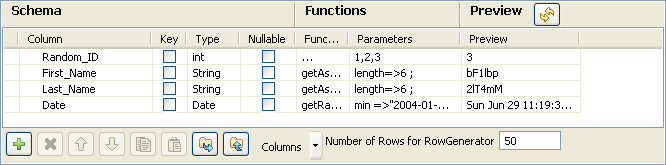

Scenario: Generating random java data
- The following scenario creates a two-component job made in Java, generating 50 rows structured as follows: a randomly picked-up ID in a 1-to-3 range, a random ascii First Name and Last Name generation and a random date taken in a defined range.

- Click and drop a tRowGenerator and a tLogRow component from the Palette to the workspace.
- Right-click on the tRowGenerator component and select Row > Main. Drag this main row link onto the tLogRow component and release when the plug symbol displays.
- Double-click on the tRowGenerator component to open the Editor.
- Define the fields to be generated.

- The random ID column is of integer type, the First and Last names are of string type and the Date is of date type.
- In the Function list, select the relevant function or set on the three dots for custom function.
- On the Function parameters tab, define the Values to be randomly picked up.

- First_Name and Last_Name columns are to be generated using the getAsciiRandomString function that is predefined in the system routines. By default the length defined is 6 character-long. But you can change it if need be.
- The Date column calls the also predefined getRandomDate function. You can edit the parameter values in the Function parameters tab.
- Set the Number of Rows to be generated to 50.
- Click OK to validate the setting.
- Double-click on the tLogRow component to view the properties. The default setting is retained for this job.
- Press F6 to run the job.

- The 50 rows are generated following the setting defined in the tRowGenerator editor and the output is displayed in the Run Job console.